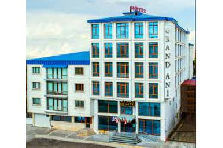
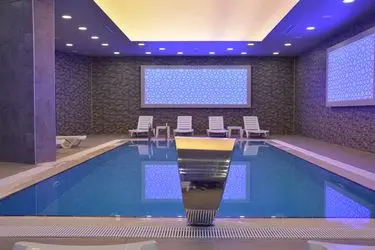
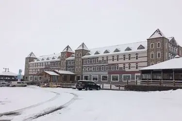
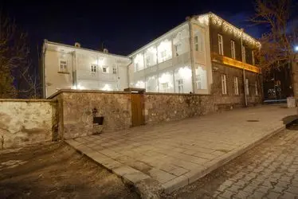
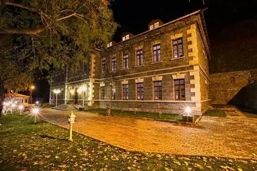

Sarıkamış Kayak Merkezi ile uzun yıllardır kış turizminin ülkemizdeki en gözde tatil duraklarından biri olan Kars, Doğu Ekspresi turları ile de son yıllarda sadece kışın değil diğer mevsimlerde de popüler bir rota haline geldi. Yıl içerisinde oldukça yüksek sayıda misafir ağırlayan şehirde konaklama seçenekleri de oldukça zengin. Sarıkamış zirvelerine yakın kayak otellerinin yanı sıra Kars şehir merkezinde tarihi yapılarda hizmet veren lüks butik oteller ya da daha ekonomik bir konaklama arayanlara hitap eden küçük otel ya da apart oteller… Kars Otelleri arasında her bütçeye uygun konaklama alternatifi bulmak mümkün.
| Konaklama Yerleri | Özellikleri |
|---|---|
|  |
Grand Ani Hotelharitada göster4 yıldızlı Grand Ani Hotel, Kars merkezinde şehrin tarihi ve turistik noktalarına kısa bir yürüyüş mesafesinde güzel bir konumda hizmet veriyor. 62 tane sigara içilmeyen odaya sahip otelin her odası sade ve şık dekorasyonlar, büyük ekran televizyon, minibar, klima, merkezi ısıtma, donanımlı lüks banyo, halı zemin ve çalışma masası gibi olanaklarla donatılmış. Balo salonunda düğün, nişan ve kına gecesi gibi etkinliklere ev sahipliği yapan tesisin restoranında ise Kars ve Doğu Anadolu'nun sevilen lezzetler ve bol çeşitli sabah kahvaltıları servis ediliyor. Tesiste gün boyu hafif yemek menüleri, çay kahve çeşitleri ve sıcak-soğuk içecekler de bulabilirsiniz. Konuklarına son model spor aletleri ile donanımlı bir fitness salonunun yanı sıra yorgunluk atabilecekleri sauna ve geleneksel Türk hamamı da sunan otelde ısıtmalı kapalı yüzme havuzunu da kullanabilirsiniz. Çamaşırhanesi ve ücretsiz otoparkı da olan tesiste kuaför hizmeti de alabilirsiniz. Grand Ani Otel’den İl Turizm Müdürlüğü 5 dakika, Apostles Kilisesi 10 dakika, Kars Müzesi ve Havariler Müzesi 15 dakika, Evliya Camisi 18 dakika, Harakani Türbesi 20 dakika ve Kars Kalesi 25 dakika yürüme mesafesinde. |
|  |
Winter City Hotelharitada gösterKars merkezinde şehrin turistik noktalarına, iş ve alışveriş merkezlerine kısa bir yürüyüş mesafesinde hizmet veren Winter City Hotel, deneyimli personeli ve sunduğu zengin olanaklarıyla iş gezilerinin yanı sıra aile tatilleri için de ideal bir tesis. 48 tane sigara içilmeyen odaya sahip otelin her odasında büyük ekran LCD TV, ses-ışık geçirmeyen perdeler, güzel bir şehir manzarası, lüks banyo, klima, ücretsiz kablosuz internet ve merkezi ısıtma gibi özellikler var. Oda kahvaltı sistemiyle çalışan tesiste Kars manzaralı teras restoranında taze ürünlerle sabah kahvaltı tadabilir; öğle ve akşam yemeklerinde ise A’la Carte olarak erişte pilavı ve saç kavurma gibi yöresel Kars lezzetlerinden tadabilirsiniz. |
|  |
Kayı Snow Hotelharitada gösterSarıkamış Bayrak Tepe Kayak Merkezi’ne kısa bir yürüyüş mesafesinde, çarpıcı dış mimarisi ve konforlu odalarıyla konuklarını ağırlayan 5 yıldızlı Kayı Snow Otel, 92 tane sigara içilmeyen odaya sahip. Otelin pastel tonlarla dekore edilmiş odalarında LCD TV’den ortopedik yataklara, lüks banyodan kablosuz internete kadar her türlü olanağı bulabilirsiniz. Tam pansiyon çalışan tesiste zengin çeşitlerle kahvaltı, öğle ve akşam yemekleri misafirlere servis ediliyor. A’la Carte restoranında Türk ve dünya mutfaklarının yanı sıra Doğu Anadolu'nun sevilen yöresel lezzetlerini de tadabileceğiniz otelde sadece Disco Bar’da alkollü içecekler sunuluyor. |
|  |
Kars Hotelharitada gösterRus yapımı klasik bir taş konakta yer alan Kar's Otel, tarihi dokusunu korumayı başarmış iç mekanları ve her bir özel olarak dekore edilmiş odalarıyla unutulmaz bir tatil deneyimi sunuyor. İsimlerini Kars’ın tarihi ilçelerinden alan 8 tane suit odası olan otelde çocuk odası bağlantılı aile suitleri de bulabilirsiniz. Otelin her odası pastel tonlarla şık bir dekorasyona ve şömine, kaz tüyü uyku takımları, çalışma masası, kaliteli mermerler ve kişisel bakım ürünleriyle lüks banyo, LCD TV, çay kahve seti ve ücretsiz yüksek hızlı kablosuz internet gibi özelliklere sahip. |
|  |
Katerina Sarayı Hotelharitada göster1879 Rus işgali sırasında, ünlü mimarlar tarafından Baltık mimarisiyle inşa edilen ve 2015 yılında orijinaline uygun olarak restore edilerek hizmete başlayan Katerina Sarayı Hotel, tarihi ve otantik atmosferini koruyan iç mekanları ve klasik mobilyalarla süslü odalarıyla misafirlerini ağırlıyor. 34 tane sigara içilmeyen odaya sahip otel; camlı giriş büyük kapıları, ahşap işlemeli pencereleri ve doğal ahşap süslemeleri ile bir müze hissi veriyor. Bölgeye özgü taş duvarlarla süslü otel odalarında klasik mobilyalar, özel tasarımlı ve küvetli lüks banyo, şömine, antika eşyalar, el yapımı ahşap çalışma masası, tarihi kilimler, işlemeli perdeler, büyük ekran televizyon ve klima gibi hem klasik hem de modern pek çok özelliği bir arada bulabilirsiniz. |